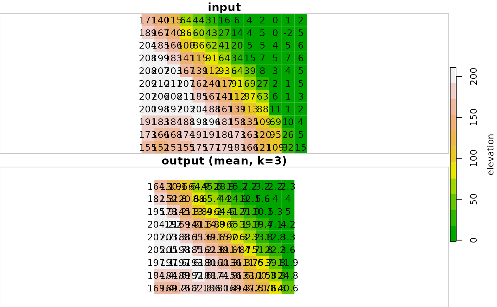

Applies a focal filter with weighted neighborhood w on a raster. The weights (w) can be added to, subtracted from, multiplied by or divided with the raster values (as specified with weight_fun). The focal cell is then taken as the mean, sum, minimum or maximum of the weighted values (as specified with fun). Input and output are rasters of class stars, single-band (i.e., only `"x"` and `"y"` dimensions), with one attribute.
focal2(
x,
w,
fun = "mean",
weight_fun = "*",
na.rm = FALSE,
mask = FALSE,
na_flag = -9999
)Arguments
- x
A raster (class
stars) with one attribute and two dimensions:xandy, i.e., a single-band raster.- w
Weights matrix defining the neighborhood size around the focal cell, as well as the weights. For example,
matrix(1,3,3)implies a neighborhood of size 3*3 with equal weights of 1 for all cells. The matrix must be square, i.e., with an odd number of rows and columns.- fun
A function to aggregate the resulting values for each neighborhood. Possible values are:
"mean","sum","min","max", and"mode". The default is"mean", i.e., the resulting values per neighborhood are averaged before being assigned to the new focal cell value.- weight_fun
An operator which is applied on each pair of values comprising the cell value and the respective weight value, as in
raster_value-weight. Possible values are:"+","-","*","/". The default is"*", i.e., each cell value is multiplied by the respective weight.- na.rm
Should
NAvalues in the neighborhood be removed from the calculation? Default isFALSE.- mask
If
TRUE, pixels withNAin the input are set toNAin the output as well, i.e., the output is "masked" using the input (default isFALSE).- na_flag
Value used to mark
NAvalues in C code. This should be set to a value which is guaranteed to be absent from the input rasterx(default is-9999).
Value
The filtered stars raster.
Note
The raster is "padded" with (nrow(w)-1)/2 more rows and columns of NA values on all sides, so that the neighborhood of the outermost rows and columns is still a complete neighborhood. Those rows and columns are removed from the final result before returning it. This means, for instance, that the outermost rows and columns in the result will be NA when using na.rm=FALSE.
References
The function interface was inspired by function raster::focal. The C code for this function is a modified and expanded version of the C function named applyKernel included with R package spatialfil.
Examples
# Small example
data(dem)
dem_mean3 = focal2(dem, matrix(1, 3, 3), "mean")
r = c(dem, round(dem_mean3, 1), along = 3)
r = st_set_dimensions(r, 3, values = c("input", "output (mean, k=3)"))
plot(r, text_values = TRUE, breaks = "equal", col = terrain.colors(11))

# \donttest{
# Larger example
data(carmel)
carmel_mean15 = focal2(carmel, matrix(1, 15, 15), "mean")
r = c(carmel, carmel_mean15, along = 3)
r = st_set_dimensions(r, 3, values = c("input", "output (mean, k=15)"))
plot(r, breaks = "equal", col = terrain.colors(11))
 # }
# }